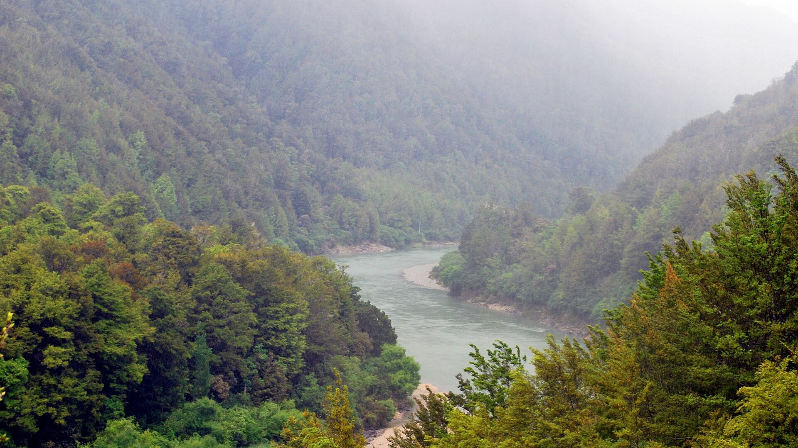
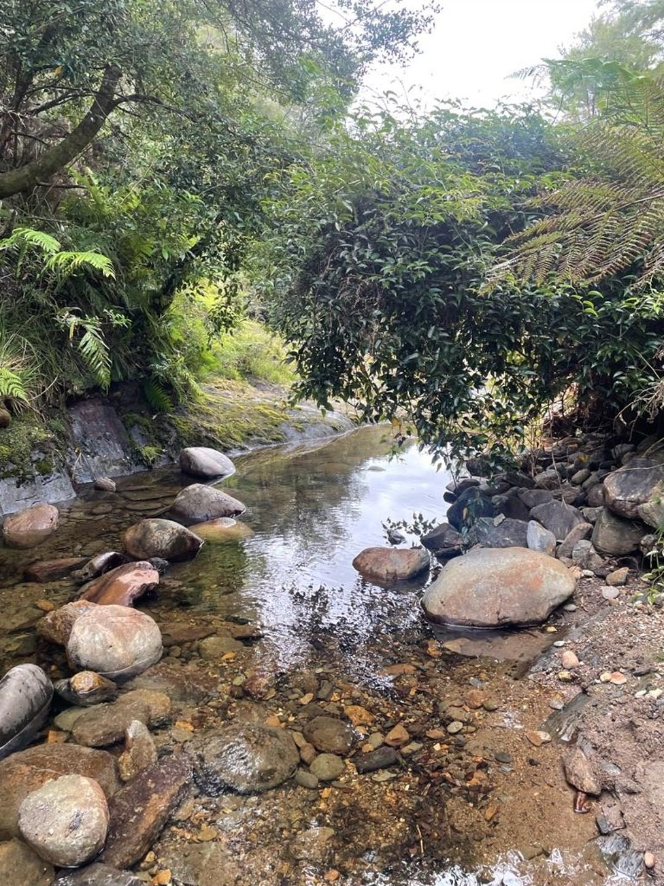
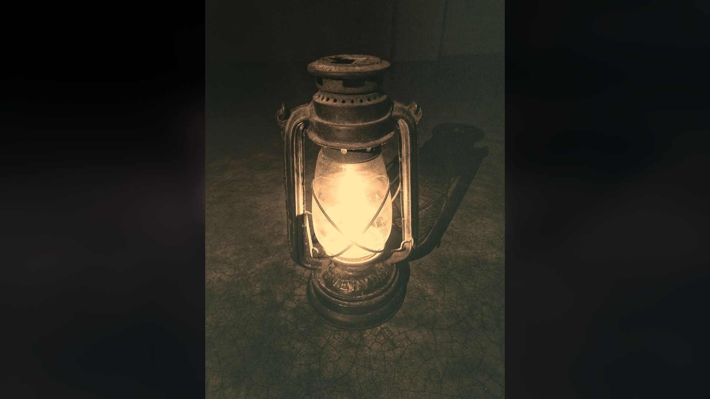

Your base in the hills
Stay with Ian at his place in Murchison, close to the rivers, the bush and the township.
Your home base
Stay with Ian in Murchison
When you come gold panning with Ian, you stay at his place in Murchison. It is a home, not a hotel: comfortable, rustic and quiet, the kind of place where the kettle is always close to the boil.
It makes for an easy rhythm. Up in the morning, out on the river, back for the evening, and nowhere you need to be except right here. The township is close by for anything you need.

What it’s like
Quiet, homely and close to the rivers
Homely
A lived-in country home with a rustic feel, not a motel room off the highway.
Quiet
Birdsong, river sounds and dark, starry skies. A good night’s sleep after a day outdoors.
River country
Murchison sits where the Buller and Matakitaki rivers meet, with gold country all around.
Handy to town
Murchison township is nearby for cafés, a pub, a general store and fuel.

When the light goes
Evenings on the verandah
After a day on the river, there is nothing better than putting your feet up, checking your vial for colour and listening to Ian’s stories about the gold-rush days and the characters who chased it.
Bring a good book, a jersey and a bit of curiosity. The hills do the rest.
Before you come
Good to know
- Booking
By phone only. Call Ian on 022 533 5445 to check dates and prices.
- Rooms and meals
Talk to Ian about rooms, beds and meals when you call, so he can set things up to suit your group.
- How long to stay
A few days gives you time to learn the pan, try a few spots and enjoy the area. Ian can suggest what works best.
- Weather
This is mountain and river country, and the weather can change fast. Pack layers and a rain jacket in any season.
- Getting here
Murchison is about 1 hr 45 from Nelson and 1 hr 20 from Westport. Ian will give you directions to the house when you book. Drive times and routes.
- Phone coverage
Mobile coverage can be patchy out on the rivers and in the gorges, so let people know your plans.
Call Ian Lawson
Come and stay a while
022 533 5445Ring Ian to talk about dates, rooms and how many of you are coming.